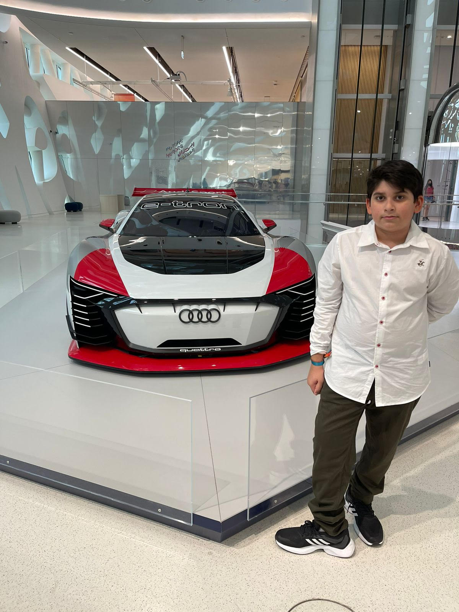

Hi, my name is Ayushman Pandey. I am 10 years old. I am from India but I live in Abu Dhabi. I am a student in grave five of Al Saad Indian school. I have been learning coding in givemefive for about 2 years. I am the chess champion of my school.
This website is about the important organs of the human body. Each webpage is dedicated to a specific organ system. Each webpage also has interesting facts about the human body. There are 5 webpages. You can learn about the Circulatory system, Respiratory system, Digestive system, Nervous system and the Excretory system.You can also learn about each organ system's parts in their webpages.
